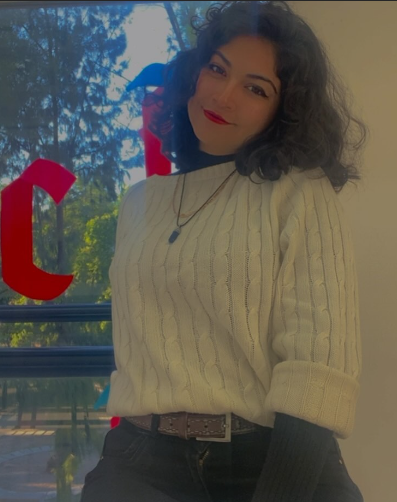

¿Quién soy yo?
Mi nombre es Salma Sheccid Vargas Todd, soy una mujer que estudia la carrera de diseño gráfico en la Benemérita Universidad Autónoma de Puebla conocida como BUAP. 
Físicamente soy de piel apiñonada, ojos grandes de color café, cabello negro y chino que llega hasta los hombros, estatura de 1.70m, nariz pequeña, cejas definidas, pestañas largas, con una complexión media, pero a pesar de esto, cuando sonrío, mis cachetes se ven grandes.
Con respecto a mi personalidad soy muy tranquila, nunca busco problemas y no me preocupo por cosas que no puedo controlar, claro, tengo un límite para todo, al llegar a este punto puedo explotar de enojo, hablando de una forma más fuerte y directa de lo que realmente haría. Siempre soy muy sonriente, amigable, me preocupo más por los demás que por mí, me encantan los animales, solo que hay insectos que no tolero, como las arañas, pero trato de no matarlas.
He de mencionar que sigo en crecimiento, no de forma física, pero sí con respecto a mi personalidad, me encanta seguir aprendiendo de manera emocional, psicológica y en conocimiento, no le tengo miedo a los retos y mucho menos a lo desconocido, así que podría decir que también me caracterizo por ser aventurera y un poco impulsiva, pero trato de tomar mis decisiones con medida.
- Salma Sheccid
- Creativa
- Impulsiva
- Aventurera